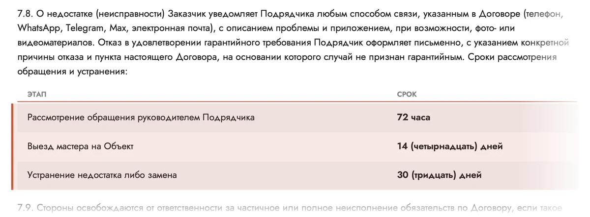

Возражение «После сдачи вы пропадёте» — 10 шапок
Каждая шапка отвечает фактом из договора: гарантия 2 года с подписания акта (п. 3.1.5, 7.6), сроки из таблицы п. 7.8 — 72 часа, 14 дней, 30 дней, отказ только письменно, реквизиты и адрес офиса. Текст стоит на сплошном цвете или плотном затемнении.
Советую: 4 — три срока крупно, читаются за секунду; 5 — путь по шагам: вместо неизвестности — понятный порядок; 7 — реквизиты и адрес: пропадают те, кого нельзя найти.
Вопрос словами клиента
- Идея
- Страх звучит крупно, так, как его думает сам человек, а рядом спокойный ответ из договора: гарантия 2 года и три срока из таблицы п. 7.8.
- Почему продаёт
- Человек узнаёт свою мысль и сразу видит ответ с номером пункта — это не оправдание, а условие, под которым стоит подпись.
- Риск
- Крупный вопрос без ответа рядом только усиливает страх: ответ должен быть виден на том же экране, и на телефоне тоже.
Через год что-то сломается, а вы пропадёте?
Ответ — не на словах, а в пункте 7.8 договора.
Гарантия 2 года с подписания акта сдачи
- 72 часаРассмотрение обращения руководителем
- 14 днейВыезд мастера на объект
- 30 днейУстранение недостатка или замена
Обычно слышат — у нас записано
- Идея
- Три фразы, которые люди слышат о гарантии на словах, и рядом — что записано у нас: сроки ответа, письменный отказ и права после подписания акта.
- Почему продаёт
- Контраст показывает разницу без названий компаний: человек сам понимает, что спросить у других, и видит, что у нас ответ уже есть.
- Риск
- Левая колонка не должна звучать как упрёк другим — фразы общие, без имён. Формулировку про акт (п. 6.3) лучше показать юристу.
Не «звоните, если что», а сроки в договоре
Гарантия 2 года с подписания акта сдачи · п. 3.1.5 и 7.6
Страница 10 договора
- Идея
- Вместо пересказа — сам пункт 7.8 из PDF договора с подсвеченной таблицей сроков, как выписка на столе. Слева то же самое крупным текстом.
- Почему продаёт
- Документ убеждает сильнее рекламы: видно, что сроки не придуманы для сайта, а стоят в договоре, который подписывают.
- Риск
- Мелкий текст фрагмента на телефоне не прочитать — главное продублировано слева. Если договор изменят, картинку нужно вырезать заново.
Что будет после сдачи — написано на странице 10 договора
Гарантия 2 года с подписания акта сдачи (п. 7.6). Сроки ответа — таблицей в п. 7.8, отказ — только письменно, с причиной.

п. 7.872 · 14 · 30 крупно
- Идея
- Три срока из таблицы п. 7.8 стоят крупно, как табло: 72 часа, 14 дней, 30 дней. Внизу полосой — настоящий дом зимой.
- Почему продаёт
- Цифры читаются за секунду и превращают слово «гарантия» в понятное ожидание: когда рассмотрят, когда приедут, когда устранят.
- Риск
- С какого момента считаются 14 и 30 дней, договор не уточняет — менеджеры должны отвечать одинаково. Не дописывать к срокам обещаний, которых нет в п. 7.8.
Если после сдачи что-то не так — сроки уже в договоре
Рассмотрение обращения руководителем
Выезд мастера на объект
Устранение недостатка или замена
Гарантия 2 года с подписания акта сдачи · п. 7.6 и 7.8
Пять шагов после обращения
- Идея
- Гарантийное обращение показано как маршрут: написали — рассмотрели — приехали — устранили, и отдельно — что будет, если случай не гарантийный.
- Почему продаёт
- Страх «пропадут» — это страх неизвестности. Шаги со сроками заменяют её понятным порядком, который можно проверить по договору.
- Риск
- На телефоне пять шагов — длинная колонка, подписи должны остаться короткими. Шаг про отказ нельзя убирать: без него шапка звучит как «устраним что угодно».
Сломалось после сдачи. Что дальше — по шагам
- Пишете или звоните
Телефон, WhatsApp, Telegram, Max или почта. Фото или видео — если можете.
п. 7.8 - Руководитель рассматривает обращение72 часа
- Мастер выезжает на объект14 дней
- Недостаток устраняем или меняем
Гарантия — 2 года с подписания акта сдачи.
30 дней - Случай не гарантийный?
Отказ — только письменно, с причиной и пунктом договора.
п. 7.8
Сроки — таблица в п. 7.8 договора, гарантия 2 года — п. 3.1.5 и 7.6.
Ролики хозяев после сдачи
- Идея
- Рядом с гарантией — три настоящих видеоотзыва с главной, подписанные так же, как там. Ролики клиенты снимали после сдачи дома.
- Почему продаёт
- Страх «пропадут после сдачи» лучше всего снимают люди, которые сдачу уже прошли: им верят больше, чем компании.
- Риск
- Что именно говорят в роликах, здесь не проверялось — нельзя подписывать их так, будто клиенты обращались по гарантии. Подписи — только как на главной.
Ролики сняли хозяева — уже после сдачи дома
Гарантия 2 года. Если что-то не так, обращение рассматриваем за 72 часа, мастер выезжает за 14 дней — п. 7.8 договора.
Кто отвечает по гарантии
- Идея
- Вместо обещания «не пропадём» — то, что можно проверить самому: компания из договора, ИНН, ОГРН, гарантия и адрес офиса с производством.
- Почему продаёт
- Пропадают те, кого нельзя найти. Реквизиты и открытый адрес показывают, к кому идти, если что-то не так, и что приехать можно ещё до договора.
- Риск
- Юридический адрес компании — в Нижегородской области, офис — в Москве; в шапке только московский. Телефоны в реквизитах договора не совпадают с номером сайта — выровнять до публикации.
Кто отвечает по гарантии — проверьте до подписания
Компания в договоре — та же, что внизу сайта, с ИНН и адресом. В офисе за встречу разберём смету, договор и сроки.
- ИНН
- 4338010020
- ОГРН
- 1214300002070
- Гарантия
- 2 года · п. 3.1.5 и 7.6
Что покрывает гарантия и что нет
- Идея
- Прямо на первом экране — что покрывает гарантия, чего не покрывает и что для неё нужно от хозяина. У каждого списка — пункт договора.
- Почему продаёт
- Кто сам называет границы гарантии, тому верят в остальном: человек не ждёт подвоха, когда откроет договор.
- Риск
- Исключения на первом экране могут насторожить — вариант скорее для страницы «Гарантии». В таблице п. 7.6 девять строк, а в прежних текстах сайта — четыре; нужно подтвердить.
Что покрывает гарантия 2 года — и что не покрывает
Всё по пунктам договора. Прочитайте их до подписания, а не после поломки.
Покрывает п. 7.6
- Силовой каркас и основание дома
- Кровля, окна и двери — вместе с монтажом
- Обшивка стен, утеплитель, паро- и ветрозащитные мембраны
- Фундамент — если наш и был выезд инженера
Не покрывает п. 3.1.5 и 7.6.1
- Механические повреждения, аварии, вандализм, стихийные бедствия
- Переделки конструкции без письменного согласования
- Нарушение правил эксплуатации дома
Нужно от вас п. 7.7
- Раз в год осматривать кровлю и фасад по нашему чек-листу
Что остаётся на руках после сдачи
- Идея
- Сдача дома показана как набор документов у хозяина: акт, памятка по обслуживанию, чек-лист ежегодного осмотра и гарантия со сроками ответа.
- Почему продаёт
- Человек видит, что после сдачи не останется один с вопросами: есть инструкция, план осмотра и понятный путь, если что-то не так.
- Риск
- Памятку и чек-лист договор обещает (п. 3.1.7, 7.7) — их нужно реально подготовить до публикации. Памятку могут прислать файлом, поэтому не рисовать её бумажным буклетом.
Дом сдан — у вас остаются акт, памятка и гарантия
Подписанный акт не лишает права на требования по гарантии — п. 6.3 договора.
Нынешний первый слайд, новая строка
- Идея
- Тот же первый слайд главной: фото террасы, «Каркасные дома под ключ», одна кнопка. Вместо нынешнего акцента про срок стройки — «с гарантией по договору», подзаголовок — про сроки ответа по гарантии.
- Почему продаёт
- Нового дизайна не нужно, а страх «после сдачи пропадут» снимается уже на экране, который видят все.
- Риск
- Одна строка всего не расскажет — нужна ссылка на страницу «Гарантии». Затемнение под текстом плотнее нынешнего, слайд станет темнее.
Каркасные дома
под ключ с гарантией по договору
Гарантия 2 года. Если после сдачи что-то не так — рассмотрим обращение за 72 часа, мастер выедет за 14 дней. Так записано в п. 7.8.